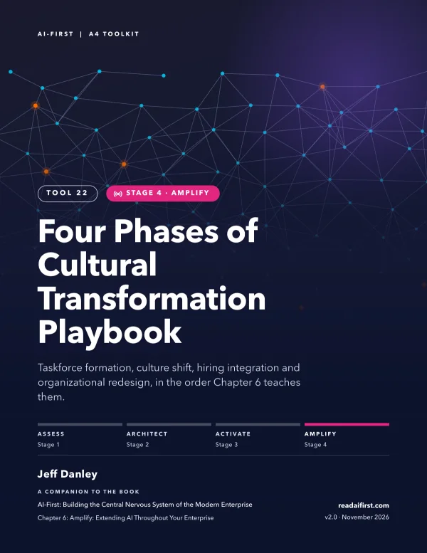
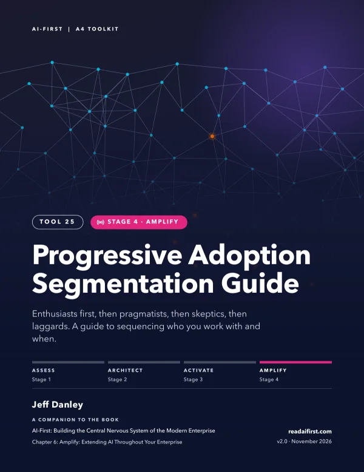

Tool 22 · Four Phases of Cultural Transformation Playbook
Taskforce formation, culture shift, hiring integration and organizational redesign, in the order Chapter 6 teaches them.
10 pages, PDF
Amplify is the stage that never finishes, and Chapter 6 explains why: scaling AI comes down to culture far more than technology.
You move through the book’s Four Phases of Cultural Transformation: Taskforce Formation, Culture Shift, Hiring Integration and Organizational Redesign.
Along the way you meet the three kinds of resistance (Trust Deficit, Complexity Overwhelm and Job Security Anxiety), build AI literacy for executives, middle managers and frontline employees, and bring people along in order, starting with the enthusiasts.
Tools 22 to 25 cover each piece.
These four help you spread what works: leading the culture change, answering resistance, building AI literacy and bringing each group of employees along at the right time.

Taskforce formation, culture shift, hiring integration and organizational redesign, in the order Chapter 6 teaches them.

Find out which kind of resistance is slowing adoption, then apply the antidote that fits it.

Three literacy programs for three audiences, held together by peer learning.

Enthusiasts first, then pragmatists, then skeptics, then laggards. A guide to sequencing who you work with and when.
One email unlocks all 34 tools. You’ll also get The Executive Briefing every Tuesday, and you can leave anytime.